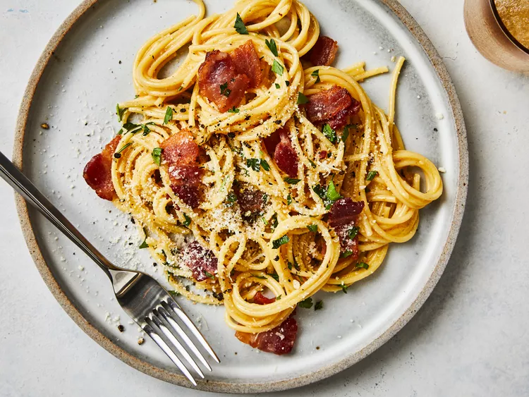

Home
Carbonara

Description
This spaghetti carbonara is a super rich "bacon and egg" pasta dish that's great to serve for company. This
recipe also makes an unusual brunch offering.
Copied from Allrecipes Allrecipes Original
Ingredients
-
1 pound spaghetti
-
2 tablespoons olive oil, divided, or as needed
-
8 slices bacon, diced
-
1 onion, chopped
-
1 clove garlic, minced
-
¼ cup dry white wine
- etc ...
Steps
- Bring a large pot of lightly salted water to a boil. Cook spaghetti in boiling water, stirring occasionally,
until tender yet firm to the bite, about 12 minutes. Drain, toss spaghetti with 1 tablespoon olive oil, and
set aside.
- Place diced bacon in a large skillet over medium heat; cook and stir until evenly browned, about 10 minutes.
Drain bacon on paper towels, reserving 2 tablespoons bacon fat in the skillet.
- ...